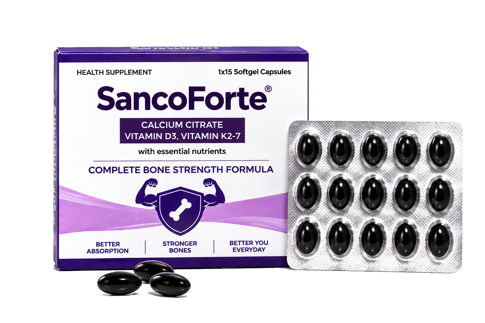

Calcium Citrate
500 mgAn essential mineral included in the formula.
THOUGHTFUL EVERYDAY NUTRITION
Meet SancoForte — a nutritional supplement combining essential nutrients in a convenient softgel format to complement your daily nutrition routine.
View product on Amazon ↗Use as directed by your dietician or healthcare professional.

ABOUT SANCOFORTE
SancoForte is a nutritional supplement formulated with calcium citrate, vitamin D3, vitamin K2-7, folic acid and vitamin B6. It is designed to complement a balanced diet and an active lifestyle.
We believe everyday wellness begins with thoughtful choices, clear product information and responsible use.
THE FORMULA
Refer to the product packaging for the complete composition and serving information.
An essential mineral included in the formula.
A vitamin that complements everyday nutrition.
Check the product packaging for the declared amount.
An additional essential nutrient in the formula.
Also listed as pyridoxine on the product label.
Composition is shown for general product information. Verify the latest physical pack label before use. This website is not a substitute for medical advice.
USAGE & STORAGE
Use only as directed by your dietician or healthcare professional. Read the product label for dosage, warnings and storage instructions. Keep out of reach of children.
DISCOVER SANCOFORTE
Explore the product listing for current pack details, availability and purchase information.
View on Amazon ↗CONTACT & BRAND INFORMATION
For product questions, refer to the contact details printed on the product packaging or contact the seller through the Amazon product listing.